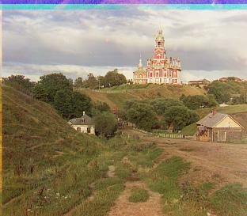

Yeah basically some old people took some glass photos in red blue and green scales,
and we have to align them together into one colorized image
Methodology
I first tried a single-scale alignment strategy which naively swept over a translation range of [-15, -15] to [15, 15] and
calculating the Euclidean distance to score each attempt, but
this didn't work for the larger images with thousands of pixels along each dimension. Eventually the method that worked best
for me was using a multi-scale/image pyramid alignment algorithm, using
structural similarity
to score the alignments.
Single-scale alignment algorithm
Crop the image channels by 10% on all sides to get rid of the black borders.
Sweep over translations from [-15, -15] to [15, 15].
See which translation results in the lowest Euclidean distance from the anchor channel.
Return the aligned channel and the alignment used.
Repeat for the other channel to be aligned (red/green)
Multi-scale alignment algorithm
Crop the image channels by 10% on all sides to get rid of the black borders.
If the number of pixels in the channel to be aligned is greater than 40,000, then recursively call align on
scaled down (by a factor of 2) versions of the channels
At the bottom of the recursive stack, run the single-scale alignment algorithm on the downscaled image channels (now using SSIM to score alignments)
Return the alignment used so that the next level of the recursive stack can use that * 2 as its initial offset
As we move up the recursive stack, perform the initial offset from the previous level of the recursion, then add the current
level's offset to that and pass it to the next level.
Alignments that are NOT at the lowest level of the image pyramid do not need to sweep over such a large range, so
instead sweep over a range of [-3, 3] for the upper levels.
Repeat the same process for aligning the red and green channels to the anchor blue channel.
Results (Multiscale Alignment Algorithm)
Cathedral

Red Alignment: [12, 3]Green Alignment: [5, 2]
Church
Red Alignment: [58, -4]Green Alignment: [25, 4]
Emir
Red Alignment: [106, 41]Green Alignment: [50, 23]
Harvesters
Red Alignment: [123, 13]Green Alignment: [59, 16]
Icon
Red Alignment: [89, 23]Green Alignment: [40, 17]
Lady
Red Alignment: [119, 12]Green Alignment: [56, 9]
Melons
Red Alignment: [117, 13]Green Alignment: [80, 10]
Monastery
Red Alignment: [3, 2]Green Alignment: [-3, 2]
Onion Church
Red Alignment: [108, 35]Green Alignment: [57, 21]
Sculpture
Red Alignment: [140, -27]Green Alignment: [33, -11]